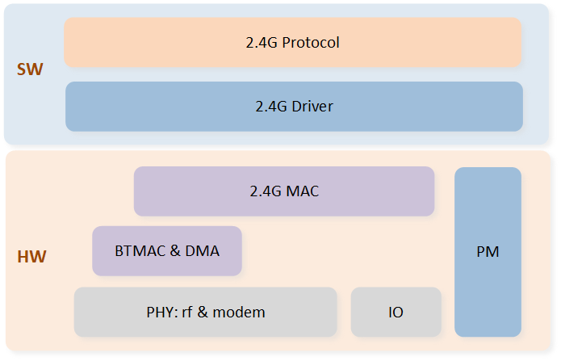
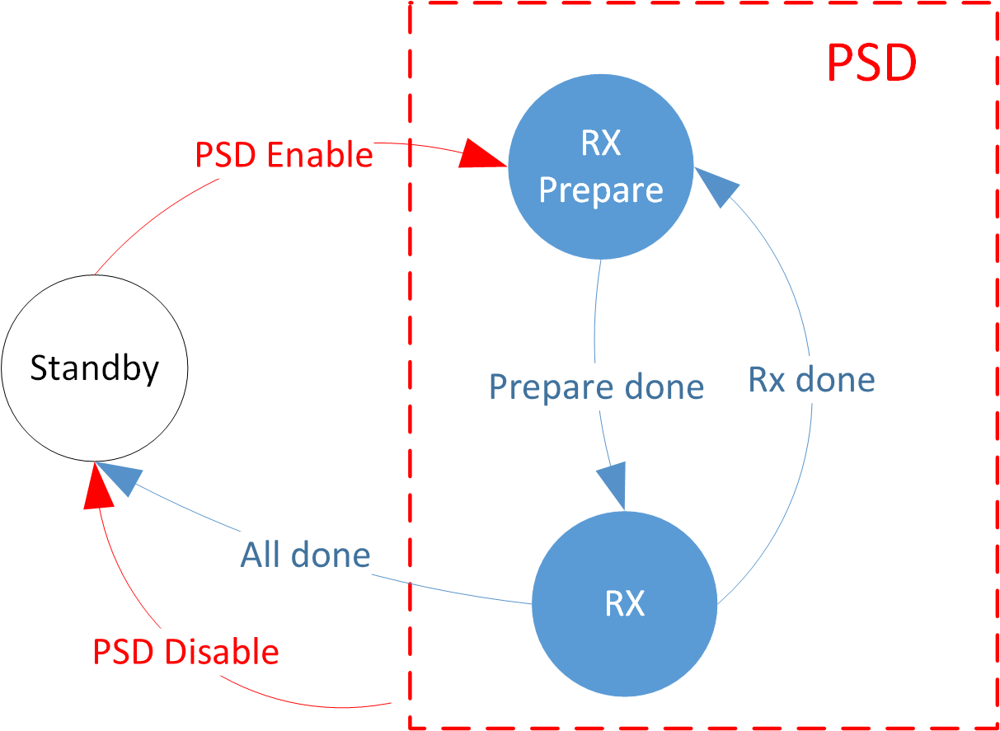
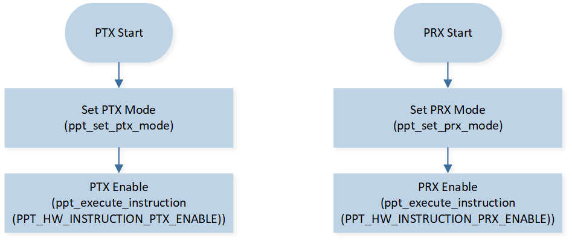
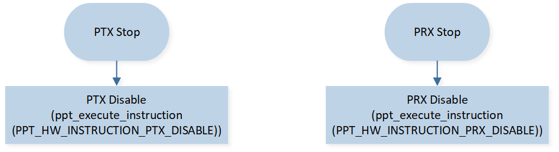
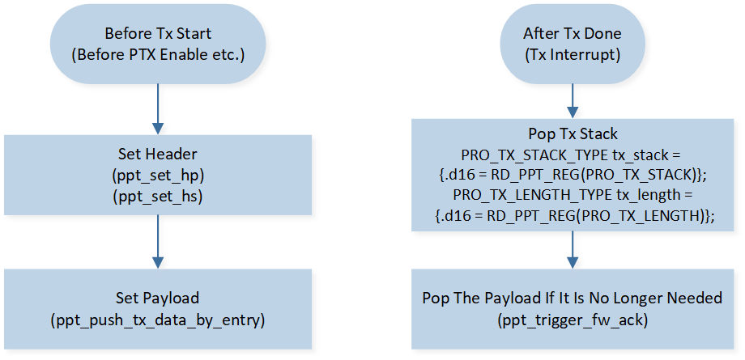
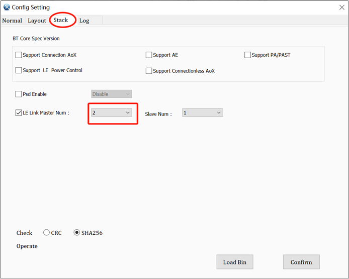

Radio 用户指南
RTL87x2x 2.4G 模块是一个功能完善的 2.4GHz 收发机，可以灵活地用于私有无线协议开发。具体特点列举如下：
带宽范围：2402MHz~2480MHz，步进 1MHz
调制方式：1M/2Mbps GFSK
编码：whitening、CRC
可调的帧结构
模式：oneshot/periodic/GPIO triggered PTX，oneshot/continuous PRX，auto ACK
数据 DMA 搬运
环境干扰检测（PSD）
系统框图
2.4G 模块软硬件两部分的 系统框图 如下。
{kind=link}

系统框图
功能介绍
帧格式
2.4G Radio 模块支持的 帧结构 由 Preamble、Access Address、Header、Payload、CRC 这 5 部分组成。

帧结构
- Preamble
长度可配置，多字节时每个字节的内容相同。内容根据 access address 字段的第一个 bit 决定。 如果 access address bit0 为 0，则 preamble 为 0xAA，否则 preamble 为 0x55。
- Access Address
Access Address 用于设备过滤，接收到的封包只有 access address 匹配才会进一步处理。 所以一个通信方向上，收发双端必须配置成一样。长度可配置。
- Header
Header 结构 由三部分组成：
Header Prefix
Length
Header Suffix
每个字段的长度和内容都可以独立配置。Length 仅包含 payload 部分的长度。

Header 结构
- Payload
封包数据部分。长度是可变的，由 Header 里的 Length 字段指定。
- CRC
帧校验字段。校验范围为 Header 和 Payload，CRC 支持配置长度、生成多项式和初值。
白化编码
2.4G Radio 模块支持数据白化编解码，防止数据流里出现过长的连续 0 或者连续 1。 白化的范围为 header、payload 和 CRC。编码支持配置长度、生成多项式和初值。
状态
2.4G 模块有 4 种状态：Standby、PSD、PTX 和 PRX。不同的状态不能共存，需要软件下指令 切换状态。
分别处于 PTX 和 PRX 状态的两个设备，可以扮演点对点 2.4G 通信的两端角色： PRX 状态的设备作为被动侦听角色，PTX 状态的设备作为主动发送角色。 PSD 是做环境信号强度检测的，当需要评估环境中的干扰情况时，可以指定一个或多个信道做检测。

状态机
备注
PTX 和 PRX 两个角色都有多个模式选项可以选择，每个模式可以独立地选择开启或者关闭。
重复模式
在 PTX 角色下，可以配置为 oneshot 或者 periodic 两种模式。
重复模式 |
说明 |
|---|---|
Oneshot 模式 |
软件每下发一次使能 PTX 指令，硬件就会发送一次数据，然后自动切回 Standby 状态 |
Periodic 模式 |
软件只需下发使能 PTX 指令一次，硬件就会持续地周期性发送数据，直到软件主动下发失能 PTX 指令 |
在 PRX 角色下，可以配置为 oneshot 或者 continuous 两种模式。
重复模式 |
说明 |
|---|---|
Oneshot 模式 |
软件每下发一次使能 PRX 指令，硬件就会启动一个侦听窗口
|
Continuous 模式 |
软件使能 PRX 后，硬件会一直侦听
|
ACK 模式
在点对点通信中，一端发送一笔封包，另一端会回复一笔封包，这笔回复封包被称为应答 ACK。 Time of Inter Frame Space (TIFS) 对应着这两个封包之间的时间间隔，如图 TIFS 所示。

TIFS
PTX 和 PRX 两个角色都支持自动 ACK 模式，打开后会自动处理应答。
PTX 角色打开 ACK 模式后，每次发送数据后，在经过帧间隔时间 TIFS 后，会开启 ACK 侦听窗口。
如果窗口内听到数据则收下这笔数据，否则窗口超时关闭侦听。
PRX 角色打开 ACK 模式后，每次收到数据后，在经过帧间隔时间 TIFS 后，会自动发送数据作为 ACK。
如果是 continuous 模式下，ACK 之后会继续 RX。
GPIO Triggered PTX 模式
PTX 角色支持 GPIO trigger 模式。GPIO trigger 模式打开后，在 GPIO 信号触发之后，硬件会自动下达使能 PTX 指令。 这个模式可以消除软件介入的抖动，可以应用于低抖动数据发送的应用场景。
子状态机
下面会分别介绍每个状态不同模式下的子状态机。
PTX 状态机

PTX Periodic Mode 状态机

PTX Oneshot Mode 状态机
PRX 状态机

PRX Continuous Mode 状态机

PRX Oneshot Mode 状态机
PSD 状态机
{kind=link}

PSD 状态机
TRX 时序图
以上章节介绍了 PTX 角色和 PRX 角色在不同模式下的 TRX 行为， TRX 时序图 如下。 图中 PTX 角色 oneshot/periodic 模式和 PRX 角色 oneshot 模式的虚线和虚线框， 是对应可选配的 ACK 模式，即只有 ACK mode 打开时，才有相应的行为。 GPIO Triggered PTX 模式下，GPIO 信号相当于图中 Enable 指令，即由 GPIO 信号 trigger PTX。

TRX 时序图
指令
PRO_INSTRUCTION 寄存器为指令下发寄存器，使用各个指令会切换 radio 进入相应的状态。
支持的指令如下表。
指令码 |
指令类型 |
说明 |
|---|---|---|
0 |
ptx enable |
进入 ptx 状态 |
1 |
prx enable |
进入 prx 状态 |
2 |
ptx disable |
退出 ptx 状态 |
3 |
prx disable |
退出 prx 状态 |
4 |
psd enable |
进入 PSD 状态 |
5 |
psd disable |
退出 PSD 状态 |
中断
Radio 运行时会产生各类中断，具体如下：
中断类型 |
说明 |
|---|---|
tx interrupt |
tx done 时触发 |
rx interrupt |
rx timeout 或者 rx packet 时触发 |
tx early interrupt |
ptx 的 periodic 模式下，除了第一次，以后每次 tx prepare 前触发 |
gpio interrupt |
gpio trigger ptx 模式下，检测到 gpio 信号时触发 |
kill ptx interrupt |
ptx disable 完成时触发 |
kill prx interrupt |
prx disable 完成时触发 |
reset trigger interrupt |
reset radio 完成时触发 |
psd interrupt |
psd 完成时触发 |
除了 PSD interrupt，所有中断的中断标志都是在 PRO_MISR 寄存器里。
除了 tx interrupt 和 rx interrupt，所有中断都是通过将对应中断标志位写 1 来清除。
tx interrupt 和 rx interrupt 的中断只有在 tx stack 和 rx stack 被清空时才会被清除，
在 TRX Stack 会介绍。
PSD interrupt 的中断标志和中断清除都是由底层实现，不需要 2.4G 控制。
TRX Stack
Radio 在触发 tx interrupt 的同时会将 tx 的各类信息一起打包送入 tx stack 中， 在触发 rx interrupt 的同时会将 rx 的各类信息一起打包送入 rx stack 中。 软件可以在中断处理程序里使用这些信息，并且只有将这些信息读出来，对应中断才会被清除。
TX Stack 信息包含以下 register：
PRO_TX_STACK
PRO_TX_HS_LOWER
PRO_TX_HS_UPPER
PRO_TX_LENGTH (tx stack 读出栈)
PRO_TX_CLK_LOWER
PRO_TX_CLK_UPPER
RX Stack 信息包含以下 register：
PRO_RSSI
PRO_LENGTH_INCLUDE_ADDON
PRO_LENGTH
PRO_RX_STACK
PRO_RX_HP
PRO_RX_CRC_LOWER
PRO_RX_CRC_UPPER
PRO_ACCHIT_CLK_LOWER
PRO_ACCHIT_CLK_UPPER
PRO_RX_HS_LOWER
PRO_RX_HS_UPPER (rx stack 读出栈)
Trx stack 是 FIFO 结构，深度为 4，每个成员包含上述一组寄存器信息。
硬件在 trx 时会自动 push 进 trx stack 的 FIFO 中。
软件在读寄存器 PRO_TX_LENGTH 时会自动 pop tx stack 的 FIFO，在读寄存器 PRO_RX_HS_UPPER 时会自动 pop rx stack 的 FIFO。
为了确保寄存器内容正常，读 trx stack 里的其他寄存器需要在读触发 pop 动作的寄存器之前。
TRX Data FIFO
Radio 发送和接收数据是带有 FIFO。TX FIFO 大小为 8 笔数据，RX FIFO 大小为 2KB。
当 TX FIFO 为空时，即 TX FIFO 的 read pointer 等于 write pointer，硬件会发送 empty packet。 软件往 TX FIFO 里送数据时，会将 TX FIFO 的 write pointer +1。 硬件已经发送一笔数据后，可以继续重传该笔数据，也可以更新 TX FIFO 的 read pointer + 1 切换下一笔数据。
当硬件收到封包后，会自动送进 RX FIFO，并触发 rx interrupt。软件在 rx interrupt 服务程序里可以去读 RX FIFO 取出数据。
多通道
通过多通道可以实现多对多通信。每个通道都有独立的 TX FIFO 和一些独立的参数，例如 access address。 有些参数是每个通道独立的，也有些参数是所有通道公用的。 多通道的参数注意区分 HW register 名字里面带数字的，driver API 形参里面带 entry 参数的。 PTX 和 PRX 角色都支持多通道收发报文。
DLPS
只有 radio 在 standby 状态时，才允许进入 DLPS 状态。
Driver
Driver 文件位于 SDK 的 subsys\ppt\driver 目录下。
该目录下有两个子目录 common 和 simple。
common 目录里提供的是基础接口，包含基础的 register 访问接口、通用的配置接口和一些基础 API。
simple 目录里提供的是基于 common 接口的简单封装，包含初始化、模式管理、内存管理和状态机管理等，简化用户使用 2.4G 模块。
2.4G 模块的功能非常丰富，2.4G 私有协议和应用需求更是千变万化的，因此 simple 目录下简单封装不可能满足所有需求。 未来我们会持续完善 simple 封装，或者提供新封装的选项。用户也可以基于 common 目录提供的基础接口自行拓展。
Common
Common 模块的主要文件有：
ppt_hw_reg.hppt_driver.hppt_driver.c
Register 访问
寄存器都是 2 Byte 长度的。他们的定义都在头文件 ppt_hw_reg.h 里，包含寄存器名和字段定义。
寄存器名示例如下。
#define PRO_INSTRUCTION 0x0 #define PRO_BASE0_LOWER 0x4 #define PRO_BASE0_UPPER 0x6
寄存器字段定义示例如下。
/* 0x0 7:0 RW instruction 0x0 15:8 RO rsvd 0x0 */ typedef union _PRO_INSTRUCTION_TYPE { uint16_t d16; struct { uint16_t instruction: 8; uint16_t rsvd: 8; }; } PRO_INSTRUCTION_TYPE; /* 0x4 15:0 RW base0[15:0] 0x0 */ typedef union _PRO_BASE0_LOWER_TYPE { uint16_t d16; struct { uint16_t base0_15_0; }; } PRO_BASE0_LOWER_TYPE; /* 0x6 15:0 RW base0[31:16] 0x0 */ typedef union _PRO_BASE0_UPPER_TYPE { uint16_t d16; struct { uint16_t base0_31_16; }; } PRO_BASE0_UPPER_TYPE;
备注
ppt_driver.h和ppt_driver.c里提供了访问寄存器的函数和宏。宏提供的接口更丰富，建议使用宏去访问寄存器。
寄存器读写的函数如下：
寄存器访问函数 函数
功能
读寄存器
写寄存器
寄存器访问的宏如下：
寄存器访问宏 宏
功能
读寄存器
写寄存器
更新寄存器的部分 bit 位
读寄存器字段
写寄存器字段
更新寄存器字段的部分 bit 位
更新寄存器字段
RF Channel
信道是由 bank index 和 channel index 两个参数指定。支持 1 个 bank，每个 bank 支持的频段如下表。channel index 是相对 bank 起始频点的偏移。例如 2403MHz 对应 bank 0，channel 1。
Bank |
频段 |
|---|---|
0 |
2402~2480MHz |
调用
ppt_set_phy_channel()，传入频率，会自动换算为 bank 和 channel。
TX Power
调用
ppt_set_tx_power_dbm()设置 tx power。
PHY Type
PHY Type 是分 rx phy 和 tx phy，且 rx phy 是所有通道公用的，tx phy 是每个通道独立的。
调用
ppt_set_phy_rx_type()设置 rx phy。调用
ppt_set_phy_tx_type()设置 tx phy。
帧格式
帧格式配置涉及到 preamble、access address、header 和 CRC。其中 preamble 每个通道独立，而 address、hp、length 和 hs 是所有通道公用的。CRC length 是所有通道公用的，CRC poly 和 init 是每个通道独立的。
调用
ppt_set_preamble_len()设置 preamble 长度。调用
ppt_set_pkt_format()设置帧格式。调用
ppt_set_crc_param()设置 CRC 公用参数。调用
ppt_set_crc_entry_param()设置 CRC 通道参数。
Whitening
Whitening 是默认打开的。Whitening 开关是所有通道公用的，length、poly 和 init 是每个通道独立的。
调用
ppt_set_white_param()设置 whitening 公用参数。调用
ppt_set_white_entry_param()设置 whitening 通道参数。
TIFS
当使用 ACK 模式时，需要配置两端的 TIFS 参数一致。
调用
ppt_set_tifs()设置 TIFS 参数。
TX Access Address
TX Access Address 支持 4byte 或 5byte。
调用
ppt_set_tx_addr()设置 tx access address 参数。
RX Access Address
RX Access Address 支持 4 byte 或 5 byte。
调用
ppt_set_rx_addr()设置 rx access address 参数。
TX Header
TX Header 包括 hp、length 和 hs 三个字段。
调用
ppt_set_hp()设置 hp 参数。length 字段的内容在 tx data 时根据 payload 长度自动配置。
调用
ppt_set_hs()设置 hs 参数。
当 tx 完成时，tx header 信息也可以在 tx stack 里得到确认，如下所示。
/* read concerned tx stack registers before pop tx stack */
PRO_TX_STACK_TYPE tx_stack = {.d16 = RD_PPT_REG(PRO_TX_STACK)}; // hp located at tx_stack.hp
PRO_TX_HS_LOWER_TYPE tx_hs_lower = {.d16 = RD_PPT_REG(PRO_TX_HS_LOWER)};
PRO_TX_HS_UPPER_TYPE tx_hs_upper = {.d16 = RD_PPT_REG(PRO_TX_HS_UPPER)};
uint32_t tx_hs = tx_hs_lower.tx_hs_15_0 + (tx_hs_upper.tx_hs_30_16 << 16);
/* pop tx stack */
PRO_TX_LENGTH_TYPE tx_length = {.d16 = RD_PPT_REG(PRO_TX_LENGTH)};
RX Header
rx header 包括 hp、length 和 hs 三个字段。其内容全部存在 rx stack 里，在 pop rx stack 时获取，如下所示。
/* read concerned rx stack registers before pop rx stack */
PRO_RX_HP_TYPE rx_hp = {.d16 = RD_PPT_REG(PRO_RX_HP)};
PRO_LENGTH_TYPE rx_length = {.d16 = RD_PPT_REG(PRO_LENGTH)};
PRO_RX_HS_LOWER_TYPE rx_hs_lower = {.d16 = RD_PPT_REG(PRO_RX_HS_LOWER)};
/* pop rx stack */
PRO_RX_HS_UPPER_TYPE rx_hs_upper = {.d16 = RD_PPT_REG(PRO_RX_HS_UPPER)};
TX Data FIFO
发送数据是放在 tx data fifo 里，发送前 push 进 fifo，发送完需要 pop 出 fifo。push 进 fifo 的 ram 地址只能是 buffer ram 类型的。
调用
ppt_push_tx_fifo()将数据 push 进 fifo。调用
ppt_trigger_fw_ack将数据 pop 出 fifo。
RX Data FIFO
软件使用 pop rx data fifo 操作读取接收数据。pop 出 fifo 的 ram 地址只能是 buffer ram 类型的。
需要注意，FIFO 里数据不仅包含 payload，还会包含 header。如果 header 总长度不是 2 字节对齐时，HW 会自动补齐送进 FIFO。
RX 的 payload 长度是从 rx stack 的寄存器 PRO_LENGTH 获取。
调用
ppt_pop_rx_fifo()读取接收数据。
中断
中断服务程序需要注册才能生效，可以处理的中断类型如 中断 所描述。
调用
ppt_reg_handler()注册中断服务程序。中断服务程序示例如下：
static PPT_ISR_SECTION void ppt_isr_handler(void) { PRO_MISR_TYPE reg_misr; reg_misr.d16 = RD_PPT_REG(PRO_MISR); APP_PRINT_INFO1("ppt_isr_handler: 0x%04x", reg_misr.d16); if (reg_misr.tx_int) { /* read concerned tx stack registers before pop tx stack */ PRO_TX_STACK_TYPE tx_stack = {.d16 = RD_PPT_REG(PRO_TX_STACK)}; PRO_TX_HS_LOWER_TYPE tx_hs_lower = {.d16 = RD_PPT_REG(PRO_TX_HS_LOWER)}; PRO_TX_HS_UPPER_TYPE tx_hs_upper = {.d16 = RD_PPT_REG(PRO_TX_HS_UPPER)}; uint32_t tx_hs = tx_hs_lower.tx_hs_15_0 + (tx_hs_upper.tx_hs_30_16 << 16); PRO_TX_CLK_LOWER_TYPE tx_clk_lower = {.d16 = RD_PPT_REG(PRO_TX_CLK_LOWER)}; PRO_TX_CLK_UPPER_TYPE tx_clk_upper = {.d16 = RD_PPT_REG(PRO_TX_CLK_UPPER)}; /* pop tx stack */ PRO_TX_LENGTH_TYPE tx_length = {.d16 = RD_PPT_REG(PRO_TX_LENGTH)}; APP_PRINT_INFO7("ptx: tx no tx %d, empty %d, tptr %d, entry %d, hp 0x%02x, len %d, hs 0x%08x", tx_stack.is_no_tx, tx_stack.is_empty, tx_stack.tx_ptr, tx_stack.tx_entry_1_0, tx_stack.tx_hp, tx_length.tx_length, tx_hs); } if (reg_misr.rx_int) { /* read concerned rx stack registers before pop rx stack */ PRO_RSSI_TYPE rssi = {.d16 = RD_PPT_REG(PRO_RSSI)}; PRO_LENGTH_TYPE rx_length = {.d16 = RD_PPT_REG(PRO_LENGTH)}; PRO_RX_STACK_TYPE rx_stack = {.d16 = RD_PPT_REG(PRO_RX_STACK)}; PRO_RX_HP_TYPE rx_hp = {.d16 = RD_PPT_REG(PRO_RX_HP)}; PRO_ACCHIT_CLK_LOWER_TYPE acchit_clk_lower = {.d16 = RD_PPT_REG(PRO_ACCHIT_CLK_LOWER)}; PRO_ACCHIT_CLK_UPPER_TYPE acchit_clk_upper = {.d16 = RD_PPT_REG(PRO_ACCHIT_CLK_UPPER)}; PRO_RX_CRC_LOWER_TYPE rx_crc_lower = {.d16 = RD_PPT_REG(PRO_RX_CRC_LOWER)}; PRO_RX_CRC_UPPER_TYPE rx_crc_upper = {.d16 = RD_PPT_REG(PRO_RX_CRC_UPPER)}; PRO_RX_HS_LOWER_TYPE rx_hs_lower = {.d16 = RD_PPT_REG(PRO_RX_HS_LOWER)}; /* pop rx stack */ PRO_RX_HS_UPPER_TYPE rx_hs_upper = {.d16 = RD_PPT_REG(PRO_RX_HS_UPPER)}; uint32_t rx_hs = rx_hs_lower.hs_15_0 + (rx_hs_upper.hs_30_16 << 16); if (rx_stack.rx_time_out || rx_stack.rx_hit == false) { APP_PRINT_ERROR0("ptx: rx timeout"); } else if (rx_stack.rx_abort_rd) { APP_PRINT_ERROR0("ptx: rx abort"); } else if (rx_stack.is_crc_error) { APP_PRINT_ERROR0("ptx: rx crc error"); } else { rx_num += 1; uint8_t rx_entry = PPT_RX_STACK_ENTRY(rx_stack); uint16_t rx_len = rx_length.d16 + PDU_HEADER_LEN; uint8_t *rx_buffer = ppt_pop_rx_data_by_entry(rx_entry, rx_len); APP_PRINT_INFO6("ptx: rx count %d, rx stack 0x%04x, len (incl header) %d, hp 0x%02x, hs 0x%08x, header+payload %b", rx_num, rx_stack.d16, rx_len, rx_hp.hp, rx_hs, TRACE_BINARY(rx_len, rx_buffer)); } } if (reg_misr.tx_early_int) { WR_PPT_REG(PRO_MISR, BIT2); } if (reg_misr.gpio_int) { WR_PPT_REG(PRO_MISR, BIT3); } if (reg_misr.kill_ptx_int) { WR_PPT_REG(PRO_MISR, BIT4); ppt_flush_rx_fifo(); ppt_ctx->fsm = PPT_FSM_STANDBY; ppt_ctx->sync_flag = false; } if (reg_misr.kill_prx_int) { WR_PPT_REG(PRO_MISR, BIT5); ppt_flush_rx_fifo(); ppt_ctx->fsm = PPT_FSM_STANDBY; ppt_ctx->sync_flag = false; } if (reg_misr.reset_trig_int) { WR_PPT_REG(PRO_MISR, BIT6); ppt_flush_rx_fifo(); ppt_ctx->fsm = PPT_FSM_STANDBY; ppt_ctx->sync_flag = false; } }
PTX 模式
PTX 支持 oneshot/periodic 和 ack/non-ack 等模式。periodic 模式下需要多配置 interval 参数，interval 单位为 125us。假设 interval 参数配置为 n，则实际 interval = (n+1)*125us。
调用
ppt_set_ptx_mode()设置 PTX 模式。
PRX 模式
PRX 支持 oneshot/continuous 和 ack/non-ack 等模式。
调用
ppt_set_prx_mode()设置 PRX 模式。
PSD 模式
PSD 支持多信道连续检测（最多 10 个信道），需要指定起止信道和步进。起止信道参数是相对 rf bank 起始频点的偏移，例如 2430MHz，相对 2402MHz 偏移 28MHz，则配置 psd 信道参数为 28。
调用
ppt_set_psd_mode()配置 PSD 参数。
指令
通过指令切换 radio 状态。
调用
ppt_execute_instruction()切换 radio 状态。
DLPS
当需要支持进入 DLPS 状态时，需要调用 ppt_dlps_init()。
Simple
Simple 模块的相关文件有：
ppt_simple.hppt_simple.c
初始化
Simple 模块封装了一个初始化函数，会对软硬件做一些配置。初始化函数 ppt_init() 需要首先被调用。
TRX Data
Simple 模块有分配 buffer ram 类型的内存用于存放数据。调用 simple 这边的 trx data 收发函数，就不要求 buffer ram 类型了。
调用
ppt_push_tx_data()将发送数据送入默认通道 0 的 TX FIFO。调用
ppt_push_tx_data_by_entry()将发送数据送入指定通道的 TX FIFO。调用
ppt_pop_rx_data()将默认通道 0 的接收数据读出。调用
ppt_pop_rx_data_by_entry()将指定通道的接收数据读出。
PTX
Simple 模块封装了 PTX 参数配置、状态机管理、同步异步调用和 periodic 模式指定重传次数等功能。只有状态机空闲，才允许 enable PTX。同步调用时的中断处理请参考 demo 工程，异步调用则是由用户自己管理状态机和回调。 PTX Enable 同步调用只有 trx 动作执行完成才会返回。例如 PTX oneshot 的 tx 和 rx（如果 ack enable 了）都执行完了才会返回。PTX periodic 必须重传指定次数才会结束。 Disable PTX 同步调用只有在 ptx kill interrupt 执行完成才会返回。
调用
ppt_set_ptx_mode_ext()配置 PTX。调用
ppt_enable_ptx()使能 PTX。调用
ppt_disable_ptx()失能 PTX。
PRX
Simple 模块封装了 PRX 参数配置、状态机管理和同步异步调用等功能。只有状态机空闲，才允许 enable PRX。同步调用时的中断处理请参考 demo 工程，异步调用则是由用户自己管理状态机和回调。 Enable PRX 同步调用动作在执行完成才会返回。例如 PRX oneshot 的 rx 和 tx（如果 ack enable 了）都执行完了才会返回。PRX continuous 没有结束条件，需要用户自己设计。 Disable PRX 同步调用只有在 kill prx interrupt 执行完成才会返回。
调用
ppt_set_prx_mode_ext()配置 PRX。调用
ppt_enable_prx()使能 PRX。调用
ppt_disable_prx()失能 PRX。
PSD
Simple 模块封装了 PSD 参数配置、状态机管理、同步异步调用、中断处理和结果收集等功能。只有状态机空闲，才允许 enable PSD。 Enable PSD 同步调用在动作执行完成才会返回，异步调用会在中断里回调通知。 PSD 执行完成后，结果会收集起来，可以根据信道索引获取结果。
调用
ppt_set_psd_mode_ext()配置 PSD。调用
ppt_enable_psd()使能 PSD。调用
ppt_get_psd_result()获取 PSD 结果。
使用流程
配置流程
2.4G 模块的 软硬件配置流程 如下。

2.4G 配置流程
PTX/PRX 启停流程
PTX/PRX 启动流程 如下。
{kind=link}

PTX/PRX 启动流程
当 PTX 使用 periodic 模式，PRX 使用 continuous 模式时，PTX 和 PRX 启动后会持续工作，直到被用户主动停止。PTX/PRX 停止流程 如下。
{kind=link}

PTX/PRX 停止流程
数据发送流程
无论是 PTX 还是 PRX，都需要在 TX 开始前准备好 header 和 payload，如 数据发送流程 所示。硬件会在 TX timing 到来时自动 TX 出去。硬件 TX timing 请参考 TRX 时序图，用户需要自己选择 header 和 payload 设置的时机。TX 成功后会产生 TX 中断，用户可以读取 TX 信息反馈，读取过程请参考 中断。当这笔封包不再需要时，软件通知硬件从 TX FIFO 里 pop 出该笔封包的 payload。
{kind=link}

数据发送流程
数据接收流程
数据接收是在中断服务程序里处理的，当 RX 中断产生时，通过 Rx Stack 里的 RX 状态寄存器判断 RX 结果，并获取 RX header 和 RX payload。数据接收流程 如下，完整中断服务程序请参考 中断。

数据接收流程
PSD 流程
在 2.4G 模块初始化后，就可以执行 PSD 流程 获取信道的干扰信号强度。

PSD 流程
注意事项
MP Tool 配置
2.4G 需要复用 BLE 资源，它的每个通道的 TX FIFO 对应一条 BLE master link 资源，参考 多通道 章节的介绍。
因此，需要通过 MP Tool 配置 BLE master link 的链路数等于所使用的 2.4G 通道数，如图 MP Tool 配置 所示。
{kind=link}

MP Tool 配置
示例工程
本模块有提供示例供用户参考，详见 Simple TRX。
See Also
相关 API Reference 请查看：